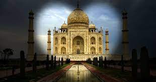

tag mahal

El Taj Mahal es considerado a nivel mundial uno de los edificios más hermosos que se hayan creado. La exquisita estructura de mármol en Agra, India, es un mausoleo, un monumento eterno al amor de un hombre hacia su esposa favorita